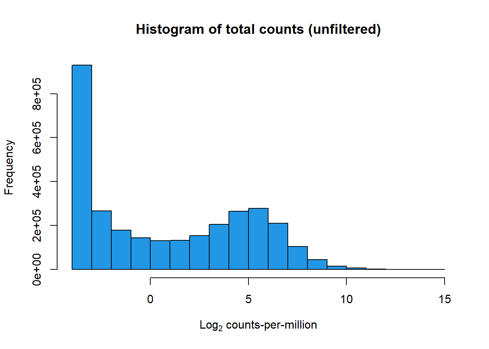
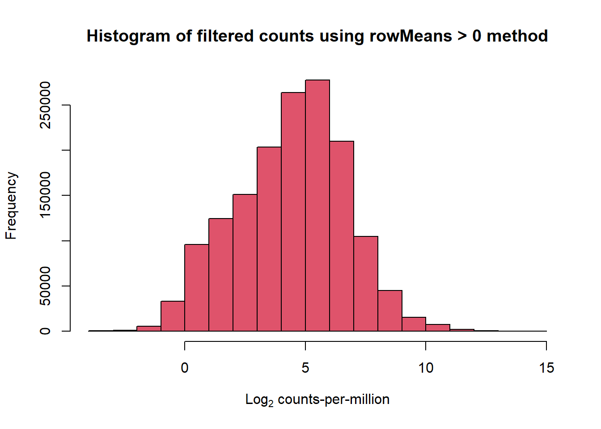
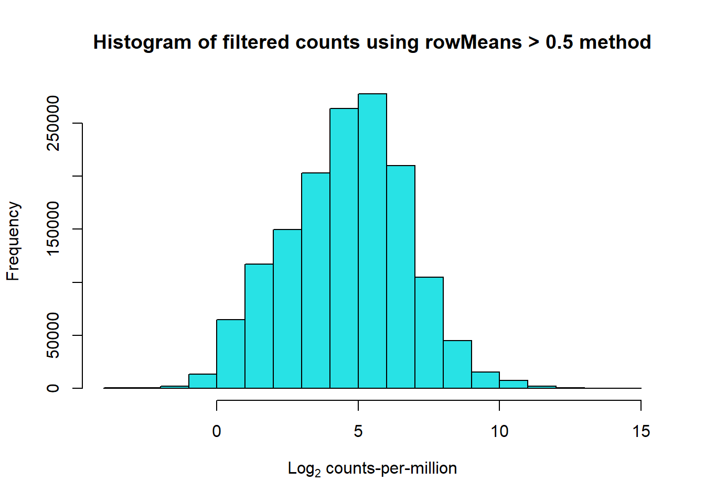
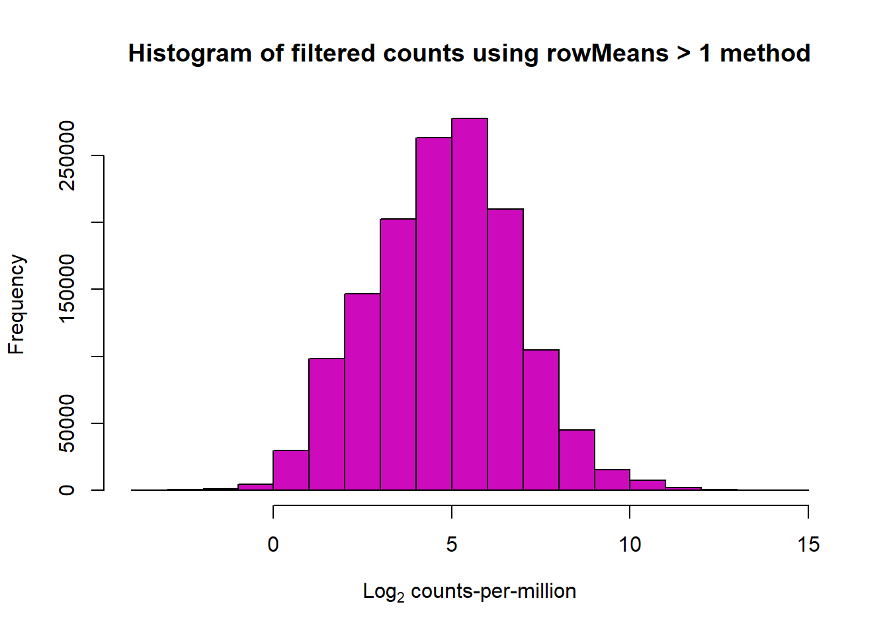

Count Matrix Analysis
Sayan Paul
2025-01-31
Last updated: 2025-01-31
Checks: 7 0
Knit directory: CX5461_Project/
This reproducible R Markdown analysis was created with workflowr (version 1.7.1). The Checks tab describes the reproducibility checks that were applied when the results were created. The Past versions tab lists the development history.
Great! Since the R Markdown file has been committed to the Git repository, you know the exact version of the code that produced these results.
Great job! The global environment was empty. Objects defined in the global environment can affect the analysis in your R Markdown file in unknown ways. For reproduciblity it’s best to always run the code in an empty environment.
The command set.seed(20250129) was run prior to running
the code in the R Markdown file. Setting a seed ensures that any results
that rely on randomness, e.g. subsampling or permutations, are
reproducible.
Great job! Recording the operating system, R version, and package versions is critical for reproducibility.
Nice! There were no cached chunks for this analysis, so you can be confident that you successfully produced the results during this run.
Great job! Using relative paths to the files within your workflowr project makes it easier to run your code on other machines.
Great! You are using Git for version control. Tracking code development and connecting the code version to the results is critical for reproducibility.
The results in this page were generated with repository version 3c7e5bc. See the Past versions tab to see a history of the changes made to the R Markdown and HTML files.
Note that you need to be careful to ensure that all relevant files for
the analysis have been committed to Git prior to generating the results
(you can use wflow_publish or
wflow_git_commit). workflowr only checks the R Markdown
file, but you know if there are other scripts or data files that it
depends on. Below is the status of the Git repository when the results
were generated:
Ignored files:
Ignored: .RData
Ignored: .Rhistory
Ignored: .Rproj.user/
Untracked files:
Untracked: data/counts_matrix.csv
Note that any generated files, e.g. HTML, png, CSS, etc., are not included in this status report because it is ok for generated content to have uncommitted changes.
These are the previous versions of the repository in which changes were
made to the R Markdown (analysis/count_matrix_analysis.Rmd)
and HTML (docs/count_matrix_analysis.html) files. If you’ve
configured a remote Git repository (see ?wflow_git_remote),
click on the hyperlinks in the table below to view the files as they
were in that past version.
| File | Version | Author | Date | Message |
|---|---|---|---|---|
| Rmd | 3c7e5bc | sayanpaul01 | 2025-01-31 | Fixed ‘True’ to ‘TRUE’ in R Markdown file |
Load Required Libraries
📍 Load Count Matrix
# Load the count matrix from the TSV file
counts_matrix <- read.csv("data/counts_matrix.csv", header=TRUE, check.names=FALSE)
# Remove "X" prefix from column names (if present)
colnames(counts_matrix) <- gsub("^X", "", colnames(counts_matrix))
# Display first few rows
head(counts_matrix) 17.3_CX.5461_0.1_3 17.3_DOX_0.5_24 87.1_DOX_0.5_24 87.1_VEH_0.1_24
1 8 1 5 6
2 238 227 358 276
3 4 11 12 7
4 0 0 1 0
5 0 0 1 0
6 0 0 0 0
87.1_VEH_0.5_24 87.1_CX.5461_0.1_48 87.1_CX.5461_0.5_48 87.1_DOX_0.1_48
1 3 3 9 7
2 298 349 254 335
3 8 8 9 10
4 0 1 0 0
5 0 0 0 0
6 0 0 0 1
87.1_DOX_0.5_48 87.1_VEH_0.1_48 87.1_VEH_0.5_48 17.3_VEH_0.1_24
1 7 2 5 5
2 427 234 267 225
3 12 3 10 2
4 1 0 0 0
5 1 0 0 0
6 1 0 0 0
17.3_VEH_0.5_24 17.3_CX.5461_0.1_48 17.3_CX.5461_0.5_48 17.3_DOX_0.1_48
1 3 5 3 10
2 187 214 168 301
3 4 7 3 11
4 0 0 0 2
5 0 0 0 0
6 0 0 0 0
17.3_DOX_0.5_48 17.3_VEH_0.1_48 17.3_VEH_0.5_48 84.1_CX.5461_0.1_3
1 14 5 4 0
2 370 304 151 220
3 6 5 5 4
4 1 0 0 0
5 1 0 0 0
6 0 0 0 0
17.3_CX.5461_0.5_3 84.1_CX.5461_0.5_3 84.1_DOX_0.1_3 84.1_DOX_0.5_3
1 4 1 0 0
2 178 217 235 228
3 2 4 6 9
4 0 1 0 0
5 1 0 0 0
6 0 0 0 0
84.1_VEH_0.1_3 84.1_VEH_0.5_3 84.1_CX.5461_0.1_24 84.1_CX.5461_0.5_24
1 0 0 0 0
2 235 178 330 244
3 8 3 3 3
4 0 0 0 0
5 0 0 0 0
6 0 0 0 0
84.1_DOX_0.1_24 84.1_DOX_0.5_24 84.1_VEH_0.1_24 17.3_DOX_0.1_3
1 0 0 1 6
2 310 320 211 213
3 13 5 2 7
4 0 1 0 2
5 0 0 0 0
6 0 0 0 0
84.1_VEH_0.5_24 84.1_CX.5461_0.1_48 84.1_CX.5461_0.5_48 84.1_DOX_0.1_48
1 0 0 0 0
2 241 153 279 266
3 11 3 7 9
4 0 0 0 0
5 1 0 0 0
6 0 0 0 0
84.1_DOX_0.5_48 84.1_VEH_0.1_48 84.1_VEH_0.5_48 90.1_CX.5461_0.1_3
1 2 0 0 6
2 272 174 194 321
3 5 6 14 11
4 0 0 0 0
5 0 0 0 0
6 0 0 0 0
90.1_CX.5461_0.5_3 90.1_DOX_0.1_3 17.3_DOX_0.5_3 90.1_DOX_0.5_3
1 0 1 3 7
2 260 320 207 340
3 4 11 13 9
4 0 0 0 1
5 0 0 0 0
6 0 0 0 0
90.1_VEH_0.1_3 90.1_VEH_0.5_3 90.1_CX.5461_0.1_24 90.1_CX.5461_0.5_24
1 2 3 3 7
2 320 279 258 311
3 11 7 10 11
4 0 1 0 0
5 0 0 1 0
6 0 0 0 0
90.1_DOX_0.1_24 90.1_DOX_0.5_24 90.1_VEH_0.1_24 90.1_VEH_0.5_24
1 3 8 4 1
2 331 453 398 395
3 9 18 15 15
4 0 0 0 0
5 0 0 0 0
6 0 0 0 0
90.1_CX.5461_0.1_48 17.3_VEH_0.1_3 90.1_CX.5461_0.5_48 90.1_DOX_0.1_48
1 4 7 5 6
2 415 324 283 283
3 17 9 11 8
4 0 0 0 0
5 0 0 0 0
6 0 0 0 0
90.1_DOX_0.5_48 90.1_VEH_0.1_48 90.1_VEH_0.5_48 75.1_CX.5461_0.1_3
1 20 2 10 1
2 453 301 265 309
3 9 7 5 10
4 0 0 0 0
5 1 1 0 0
6 1 0 0 0
75.1_CX.5461_0.5_3 75.1_DOX_0.1_3 75.1_DOX_0.5_3 75.1_VEH_0.1_3
1 1 3 3 2
2 306 317 216 303
3 11 7 7 10
4 0 0 0 1
5 0 0 0 0
6 0 0 0 0
17.3_VEH_0.5_3 75.1_VEH_0.5_3 75.1_CX.5461_0.1_24 75.1_CX.5461_0.5_24
1 3 2 2 1
2 248 269 368 263
3 8 10 17 6
4 0 0 1 0
5 1 0 0 0
6 0 0 0 0
75.1_DOX_0.1_24 75.1_DOX_0.5_24 75.1_VEH_0.1_24 75.1_VEH_0.5_24
1 2 2 0 1
2 540 284 405 429
3 28 4 16 9
4 0 11 2 0
5 0 3 0 0
6 0 0 0 0
75.1_CX.5461_0.1_48 75.1_CX.5461_0.5_48 75.1_DOX_0.1_48 17.3_CX.5461_0.1_24
1 3 1 6 6
2 356 357 344 236
3 11 21 13 7
4 0 0 0 0
5 0 0 1 0
6 0 0 0 0
75.1_DOX_0.5_48 75.1_VEH_0.1_48 75.1_VEH_0.5_48 78.1_CX.5461_0.1_3
1 3 3 0 0
2 317 304 406 222
3 10 21 11 3
4 10 0 1 0
5 1 0 0 0
6 1 0 0 0
78.1_CX.5461_0.5_3 78.1_DOX_0.1_3 78.1_DOX_0.5_3 78.1_VEH_0.1_3
1 0 1 0 0
2 196 221 205 231
3 5 3 5 8
4 0 0 0 0
5 0 0 0 0
6 0 0 0 0
78.1_VEH_0.5_3 78.1_CX.5461_0.1_24 17.3_CX.5461_0.5_24 78.1_CX.5461_0.5_24
1 0 0 2 0
2 171 191 238 153
3 2 2 6 1
4 0 0 0 0
5 0 0 0 0
6 0 0 0 0
78.1_DOX_0.1_24 78.1_DOX_0.5_24 78.1_VEH_0.1_24 78.1_VEH_0.5_24
1 0 1 1 0
2 410 55 183 184
3 11 0 1 8
4 0 2 0 0
5 0 0 0 0
6 0 0 0 0
78.1_CX.5461_0.1_48 78.1_CX.5461_0.5_48 78.1_DOX_0.1_48 78.1_DOX_0.5_48
1 0 1 1 0
2 234 187 245 205
3 4 3 5 1
4 0 0 0 16
5 0 0 0 0
6 0 0 0 1
78.1_VEH_0.1_48 17.3_DOX_0.1_24 78.1_VEH_0.5_48 87.1_CX.5461_0.1_3
1 0 10 1 2
2 226 364 212 251
3 7 9 4 10
4 0 0 0 0
5 0 1 0 0
6 1 0 0 0
87.1_CX.5461_0.5_3 87.1_DOX_0.1_3 87.1_DOX_0.5_3 87.1_VEH_0.1_3
1 4 3 9 6
2 307 289 344 242
3 11 7 6 7
4 1 0 0 0
5 0 0 0 0
6 0 0 0 0
87.1_VEH_0.5_3 87.1_CX.5461_0.1_24 87.1_CX.5461_0.5_24 87.1_DOX_0.1_24
1 4 7 4 4
2 300 423 314 283
3 14 15 4 5
4 1 0 0 0
5 0 0 0 0
6 0 0 0 0📍 Boxplot of Raw Counts (Unnormalized)
# Boxplot of unnormalized counts
boxplot(counts_matrix,
main = "Boxplots of samples (Unnormalized)",
names = colnames(counts_matrix),
las = 2,
cex.axis = 0.7)
📍 Log-Transformed Counts (CPM)
# Compute CPM values
cpm <- cpm(counts_matrix)
lcpm <- cpm(counts_matrix, log=TRUE)
# Dimensions
dim(lcpm)[1] 28395 108📍 Histogram of Unfiltered Log Counts
hist(lcpm,
main = "Histogram of total counts (unfiltered)",
xlab = expression("Log"[2]*" counts-per-million"),
col = 4)
📍 Filtering Count Matrix (rowMeans > 0)
filcpm_matrix <- subset(lcpm, (rowMeans(lcpm) > 0))
dim(filcpm_matrix)[1] 14279 108📍 Histogram of filtered Log Counts (rowMeans > 0)
hist(filcpm_matrix,
main = "Histogram of filtered counts using rowMeans > 0 method",
xlab = expression("Log"[2]*" counts-per-million"),
col = 2)
📍 Filtering Count Matrix (rowMeans > 0.5)
filcpm_matrix1 <- subset(lcpm, (rowMeans(lcpm) > 0.5))
dim(filcpm_matrix1)[1] 13678 108📍 Histogram of filtered Log Counts (rowMeans > 0.5)
hist(filcpm_matrix1,
main = "Histogram of filtered counts using rowMeans > 0.5 method",
xlab = expression("Log"[2]*" counts-per-million"),
col = 5)
📍 Filtering Count Matrix (rowMeans > 1)
filcpm_matrix2 <- subset(lcpm, (rowMeans(lcpm) > 1))
dim(filcpm_matrix2)[1] 13047 108📍 Histogram of filtered Log Counts (rowMeans > 0.5)
hist(filcpm_matrix2,
main = "Histogram of filtered counts using rowMeans > 1 method",
xlab = expression("Log"[2]*" counts-per-million"),
col = 6)
sessionInfo()R version 4.3.0 (2023-04-21 ucrt)
Platform: x86_64-w64-mingw32/x64 (64-bit)
Running under: Windows 11 x64 (build 22631)
Matrix products: default
locale:
[1] LC_COLLATE=English_United States.utf8
[2] LC_CTYPE=English_United States.utf8
[3] LC_MONETARY=English_United States.utf8
[4] LC_NUMERIC=C
[5] LC_TIME=English_United States.utf8
time zone: America/Chicago
tzcode source: internal
attached base packages:
[1] stats4 stats graphics grDevices utils datasets methods
[8] base
other attached packages:
[1] Hmisc_5.2-0
[2] corrplot_0.95
[3] ggrepel_0.9.6
[4] cowplot_1.1.3
[5] Homo.sapiens_1.3.1
[6] TxDb.Hsapiens.UCSC.hg19.knownGene_3.2.2
[7] org.Hs.eg.db_3.18.0
[8] GO.db_3.18.0
[9] OrganismDbi_1.44.0
[10] GenomicFeatures_1.54.4
[11] GenomicRanges_1.54.1
[12] GenomeInfoDb_1.38.8
[13] AnnotationDbi_1.64.1
[14] IRanges_2.36.0
[15] S4Vectors_0.40.1
[16] biomaRt_2.58.2
[17] scales_1.3.0
[18] lubridate_1.9.3
[19] forcats_1.0.0
[20] stringr_1.5.1
[21] purrr_1.0.2
[22] readr_2.1.5
[23] tidyr_1.3.1
[24] tibble_3.2.1
[25] tidyverse_2.0.0
[26] RColorBrewer_1.1-3
[27] Biobase_2.62.0
[28] BiocGenerics_0.48.1
[29] dplyr_1.1.4
[30] reshape2_1.4.4
[31] ggplot2_3.5.1
[32] edgeR_4.0.1
[33] limma_3.58.1
[34] workflowr_1.7.1
loaded via a namespace (and not attached):
[1] rstudioapi_0.17.1 jsonlite_1.8.9
[3] magrittr_2.0.3 rmarkdown_2.29
[5] fs_1.6.3 BiocIO_1.12.0
[7] zlibbioc_1.48.0 vctrs_0.6.5
[9] memoise_2.0.1 Rsamtools_2.18.0
[11] RCurl_1.98-1.13 base64enc_0.1-3
[13] htmltools_0.5.8.1 S4Arrays_1.2.1
[15] progress_1.2.3 curl_6.0.1
[17] Formula_1.2-5 SparseArray_1.2.4
[19] sass_0.4.9 bslib_0.8.0
[21] htmlwidgets_1.6.4 plyr_1.8.9
[23] cachem_1.0.8 GenomicAlignments_1.38.2
[25] whisker_0.4.1 lifecycle_1.0.4
[27] pkgconfig_2.0.3 Matrix_1.6-1.1
[29] R6_2.5.1 fastmap_1.1.1
[31] GenomeInfoDbData_1.2.11 MatrixGenerics_1.14.0
[33] digest_0.6.34 colorspace_2.1-0
[35] ps_1.8.1 rprojroot_2.0.4
[37] RSQLite_2.3.3 filelock_1.0.3
[39] timechange_0.3.0 httr_1.4.7
[41] abind_1.4-8 compiler_4.3.0
[43] bit64_4.0.5 withr_3.0.2
[45] backports_1.5.0 htmlTable_2.4.3
[47] BiocParallel_1.36.0 DBI_1.2.3
[49] rappdirs_0.3.3 DelayedArray_0.28.0
[51] rjson_0.2.23 tools_4.3.0
[53] foreign_0.8-87 httpuv_1.6.15
[55] nnet_7.3-19 glue_1.7.0
[57] restfulr_0.0.15 callr_3.7.6
[59] promises_1.3.0 grid_4.3.0
[61] checkmate_2.3.2 getPass_0.2-4
[63] cluster_2.1.6 generics_0.1.3
[65] gtable_0.3.6 tzdb_0.4.0
[67] data.table_1.14.10 hms_1.1.3
[69] xml2_1.3.6 XVector_0.42.0
[71] pillar_1.10.1 later_1.3.2
[73] BiocFileCache_2.10.2 lattice_0.22-5
[75] rtracklayer_1.62.0 bit_4.0.5
[77] tidyselect_1.2.1 RBGL_1.78.0
[79] locfit_1.5-9.8 Biostrings_2.70.1
[81] knitr_1.49 git2r_0.35.0
[83] gridExtra_2.3 SummarizedExperiment_1.32.0
[85] xfun_0.50 statmod_1.5.0
[87] matrixStats_1.4.1 stringi_1.8.3
[89] yaml_2.3.10 evaluate_1.0.3
[91] codetools_0.2-20 BiocManager_1.30.25
[93] graph_1.80.0 cli_3.6.1
[95] rpart_4.1.23 munsell_0.5.1
[97] processx_3.8.5 jquerylib_0.1.4
[99] Rcpp_1.0.12 dbplyr_2.5.0
[101] png_0.1-8 XML_3.99-0.17
[103] parallel_4.3.0 blob_1.2.4
[105] prettyunits_1.2.0 bitops_1.0-7
[107] crayon_1.5.3 rlang_1.1.3
[109] KEGGREST_1.42.0